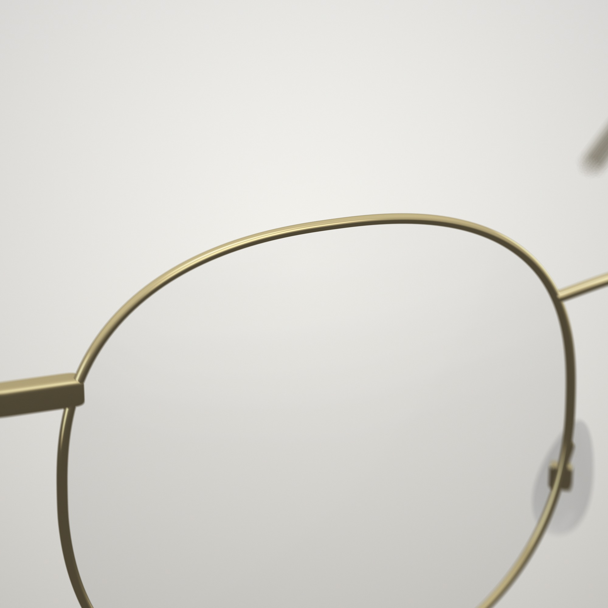
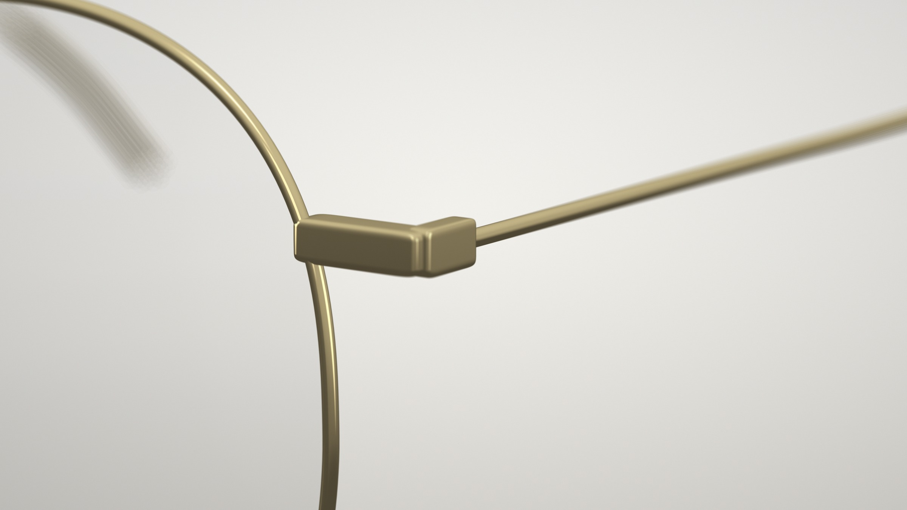
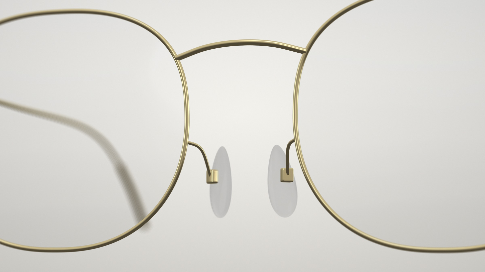

Elegant
Goldene Akzente und filigranes Design verleihen ARIK einen luxuriösen Charakter.
ARIK vereint zeitlose Eleganz mit moderner Handwerkskunst. Der filigrane Rahmen aus hochwertigem Titan verleiht der Brille ihre leichte und zugleich edle Erscheinung. Titan zeichnet sich durch seine hohe Stabilität, Korrosionsbeständigkeit und sein geringes Gewicht aus. Dadurch bietet es einen angenehmen Tragekomfort, ohne auf Robustheit zu verzichten. Die goldfarbene Metallfassung, die grosszügigen Gläser und die fein abgestimmten Details verleihen ARIK einen unverwechselbaren Charakter. Das Zusammenspiel aus hochwertigen Materialien und reduzierter Formgebung macht die Brille zu einem stilvollen Begleiter im Alltag.
Goldene Akzente und filigranes Design verleihen ARIK einen luxuriösen Charakter.
Hochwertiges Titan sorgt für ein geringes Gewicht und angenehmen Tragekomfort.
Die klassische Form verbindet Retro-Charme mit moderner Eleganz.



Hinter ARIK steht die Schweizer Brillenmarke Götti Switzerland, die 1998 von Sven Götti gegründet wurde. Die Marke hat ihren Ursprung in Wädenswil in der Schweiz und ist bekannt für ihre klare, minimalistische Designsprache. Die Brillenmodelle werden in der Schweiz entworfen. Dabei stehen harmonische Proportionen, Funktionalität und eine zeitlose Ästhetik im Mittelpunkt. Für die Herstellung ihrer Titanfassungen arbeitet Götti seit vielen Jahren mit einem spezialisierten Produzenten in Japan zusammen. ARIK verbindet somit Schweizer Designtradition mit japanischer Fertigungspräzision. Das Ergebnis ist eine Brille, bei der jedes Detail aufeinander abgestimmt ist und die Eleganz nicht durch Überladenheit, sondern durch Schlichtheit zum Ausdruck bringt.